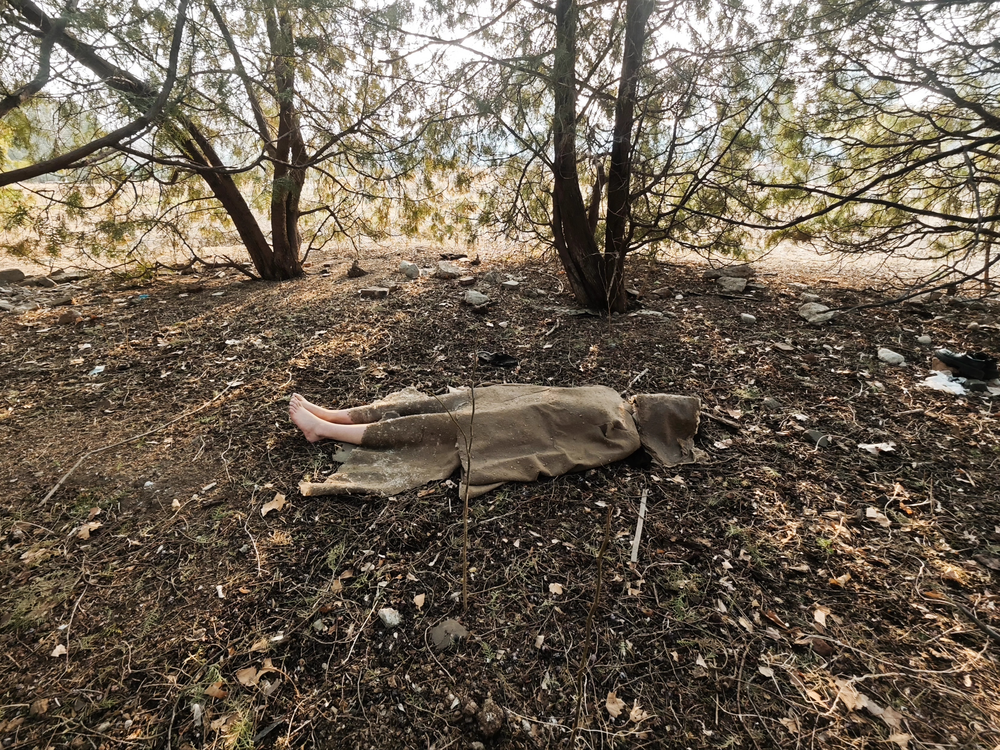
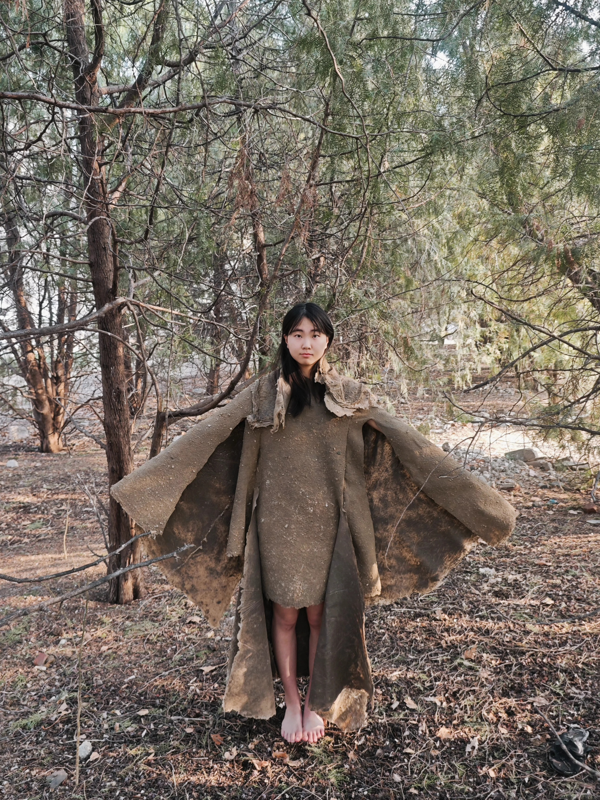
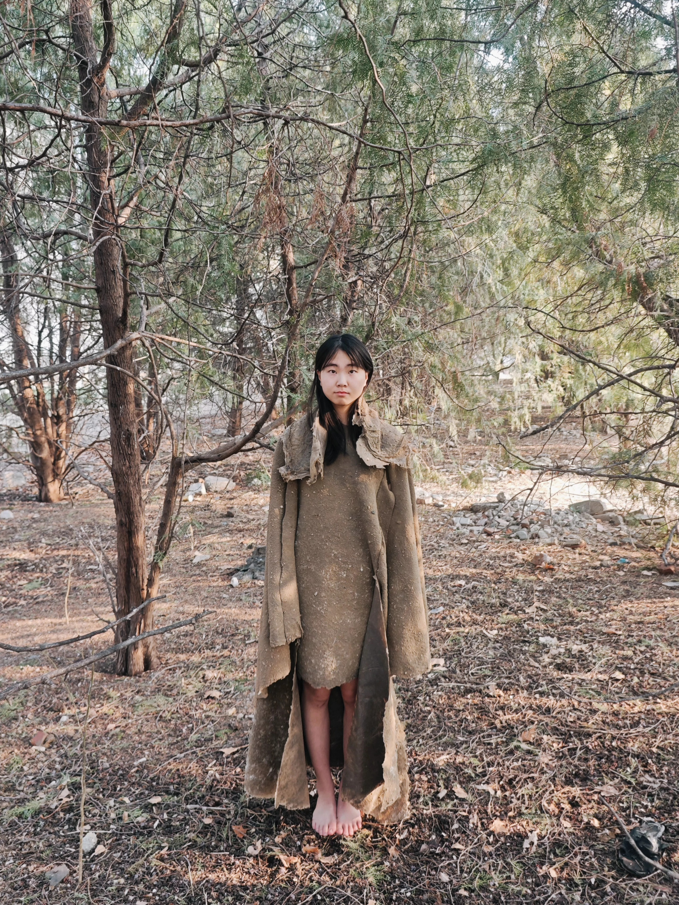
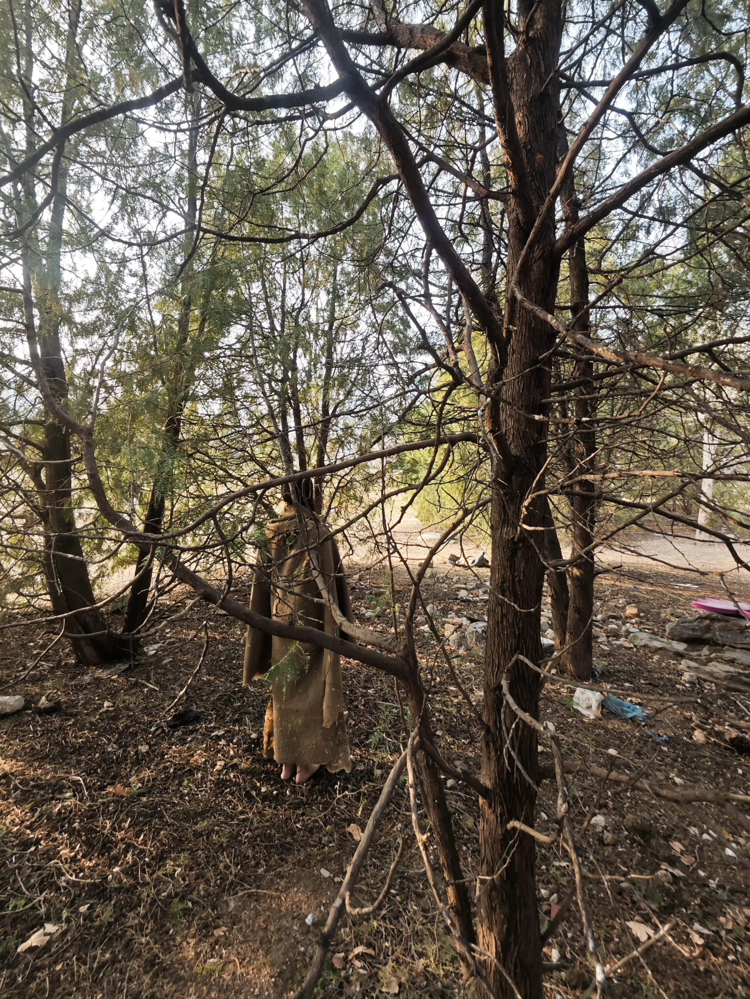
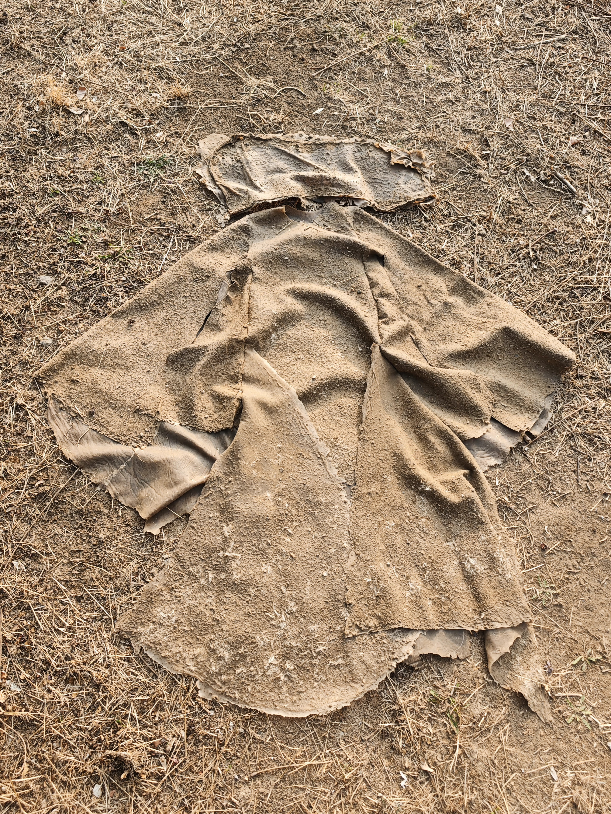
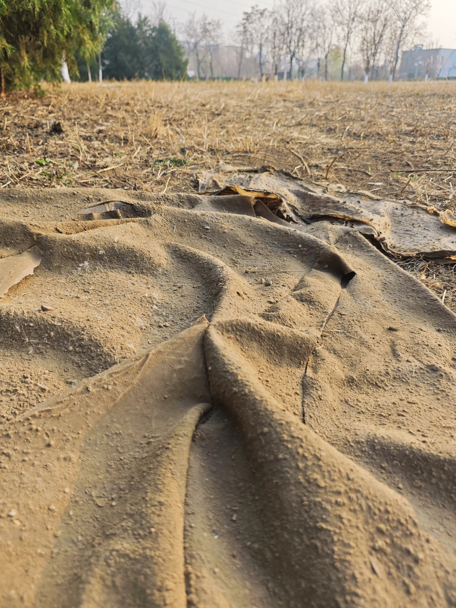
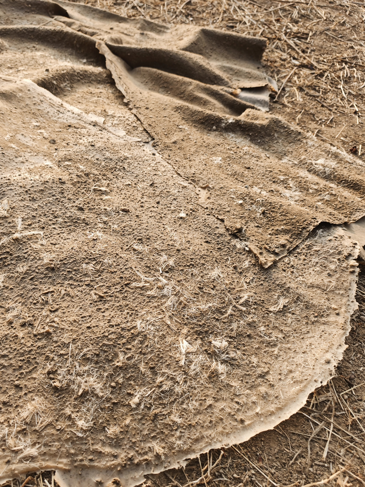

Esta obra tiene como objetivo transmitir la fusión del ser humano con el entorno, explorando la relación entre el individuo y la naturaleza. A través de la interacción con la tierra, se busca una conexión profunda y primitiva, donde el cuerpo se convierte en parte del paisaje.
La performance invita a reflexionar sobre nuestra existencia y cómo nos ocultamos o revelamos en nuestro entorno natural, utilizando materiales orgánicos para enfatizar esta simbiosis.






